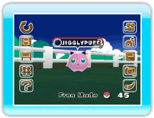
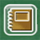

Si apuntas a la pantalla aparecerá el menú
principal.
Selecciona un menú y oprime .
Wii Menu (Menú de
Wii)
Tras charlar con Hayley, se guardará automáticamente el
juego y podrás salir.
Connect to DS (Conectar a la
consola DS)
(→p.11)
Puedes depositar y sacar Pokémon de la granja si
conectas con Pokémon Diamond o Pokémon Pearl.
BBS (tablón de
anuncios)
(→p. 15)
Pokémon Wanted (Pokémon buscados)
Comprueba cuáles son los Pokémon buscados.
Ranch Info (información de la granja)
Puedes ver el nivel actual de la granja, el número máximo de
Pokémon que puedes depositar y el número de Pokémon que necesitas
para el siguiente nivel.
Options (opciones)
(→p. 16)
Bring Mii (traer Miis)
Puedes traer un Mii creado en el Canal Mii de Wii y hacer que un
Mii sea un encargado.
Look at My Ranch! (¡mira mi granja!)
Si este ajuste está activado podrás cambiar fotos o el estado de
la granja con tus amigos Wii. Puedes invitar a tus amigos Wii a
tu granja mediante WiiConnect24. (→p.22)
Guest (invitado)
Si este ajuste está activado podría aparecer un invitado
inesperado en la granja. (→p.22)
Help (ayuda)
Puedes consultar cómo funciona el juego y leer una
explicación del menú principal.
Cambiar de modo
Puedes cambiar entre el Auto Mode (modo automático) y el
Free Mode (modo libre). * Solo disponible cuando la granja
alcance un nivel determinado.
Deposit Details (detalles)
(→p.17)
Puedes comprobar el número actual de Pokémon depositados
y ver el Parade Pokémon. Puedes seleccionar los Pokémon en la
granja mediante All (todos), Trainer (entrenador) o Favorites
(favoritos).
Take Picture (tomar una foto)
(→p.18)
Puedes tomar una foto de la pantalla actual. El número
que aparece en la esquina inferior derecha representa el número
de fotos restantes.

Album (álbum)
(→p.19)
Puedes ver las fotos que hayas tomado. También puedes
guardar y borrar las imágenes en una tarjeta SD y enviarlas al
Tablón de Wii.

 .
.